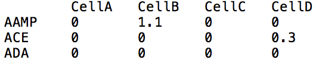
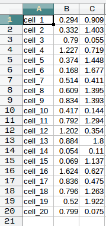

Input formatting¶
Before you use COMET with gene expression data, your data should be formatted into 3 files as shown below. The tables below are shown in excel format for ease of view, but files should be given as plain text files.
markers.txt: The expression matrix table stored as a TXT file (.txt). The columns of the table lists cell names, while the rows lists genes. Each element in the rest of the table should contain a numerical gene expression value, corresponding to the row/cell and column/gene of the element. Tab delimited only. COMET does not do any preprocessing on this file.
Using the ‘-tenx’ option in the terminal allows the input of 10X data directly from the cellranger output. You must specify the folder where the expression matrix is found instead of a single file. The names of the files MUST be: genes.tsv , barcodes.tsv, matrix.mtx

vis.txt: The visualization coordinates stored as a TXT file (.txt). Consists of three columns separated by tabs, the first column is cell name (the same as those inmarkers.txt), the second is the x-axis value for the cell, and the third is the y-axis value for the cell. Tab delimited only.
Any 2-d visualization is fine (e.g. t-SNE, UMAP)

cluster.txt: The cluster assignments for cells stored as a TXT file (.txt). The first column is cell name (consistent withmarkers.txtandtsne.txt) and the second is the cluster of which the cell is a member. Tab delimited only.
gene_list: A list of genes to use for filtering in your data. An optional addition, but when used COMET will only consider the genes submitted here. By default COMET’s online interface will use our own list of surface marking genes whereas the package will use all genes. Can be comma delimited on a single line or one gene per line, no commas.